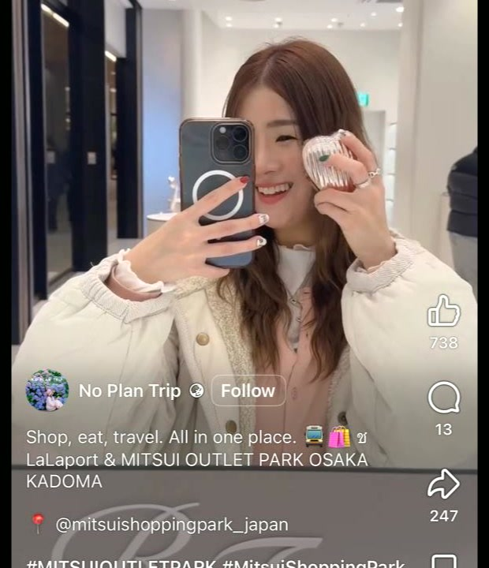
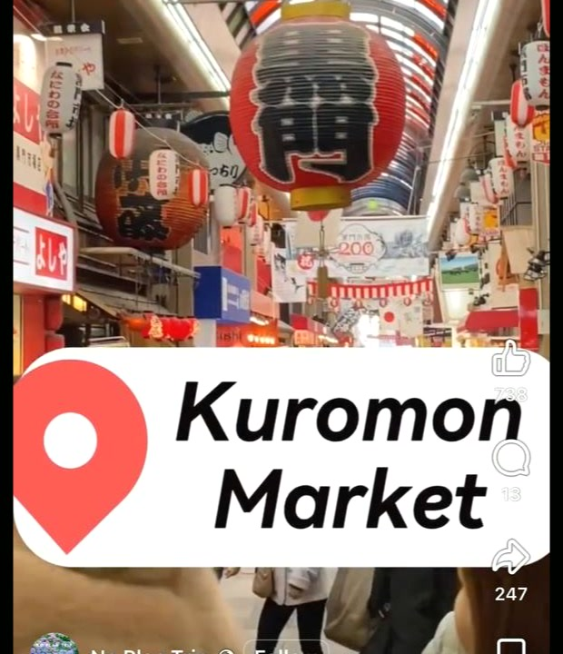
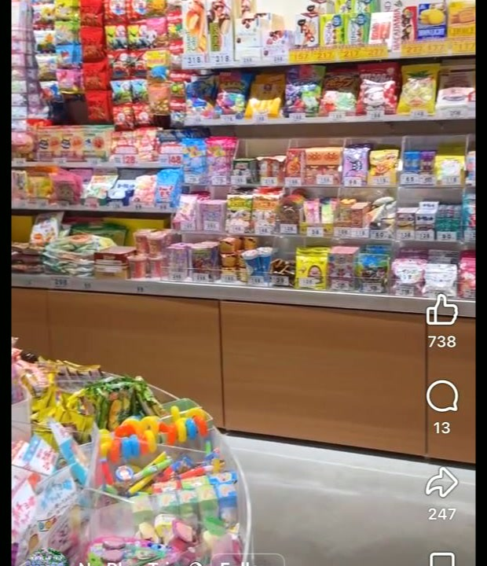
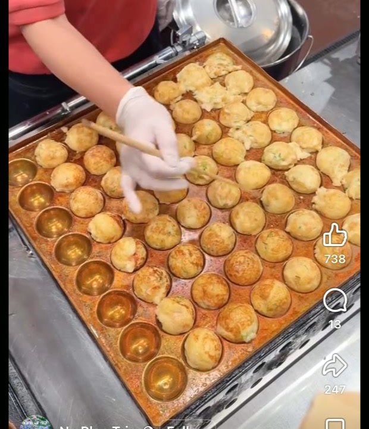
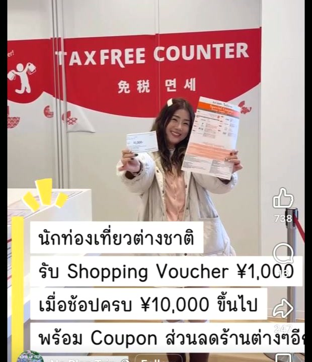

Osaka Plan
3-night rough schedule + things to do + decision blocks (Universal / Baseball) + outlet shopping notes.
Hotel
LEOPARD ShinsaibashiStay
3 Nights · 14–17 AprFixed Plan
Brother lunch 2 PM + drinks (venue TBD)Decision Pending
USJ + BaseballOsaka Key Map (City View)
Pins: your hotel, Bentencho (brother stay area), Umeda meetup option, USJ, baseball option, Kadoma outlet, plus Kansai food spots (Osaka + nearby cities like Kyoto). English-first basemap enabled; all pin names/popups are in English.
🦪 Oyster-focused
🦞 Shellfish/mixed seafood
🐟 Fish-focused seafood
🥩 Yakiniku/BBQ
🍣 Sushi
🍜 Noodles
🍢 Food market
🛍 Shopping/outlet
🟡 Yellow dot = chain location
Rough Schedule
Day 1
Fixed 2:00 PM lunch with brother (venue TBD), then drinks (you + him).
Brother is staying near Bentencho Station. Midpoint options: Hommachi / Umeda; action-zone option: Shinsaibashi/Namba.
Day 2
Optional Universal Studios Japan day.
Decide by previous night based on energy + weather + ticket pricing.
Day 3
Optional Baseball game day.
If no baseball, run outlet + market combo day.
Day 4
Fixed Departure day.
Things To Do (Non-food)
- Outlet day: Mitsui Shopping Park LaLaport KADOMA + Mitsui Outlet Park Osaka Kadoma
- Shopping targets: BEAMS + tax-free eligible brands
- Coupon note: Tourist voucher promo seen in reel (example: ¥1,000 voucher at spend threshold; verify at tax-free counter)
- Kuromon add-on: Takoyaki/snack lane if you do central-city food walk the same day
- Transit clue from reel: shuttle signage shows Namba / Shinsaibashi ⇄ LaLaport / Mitsui Outlet
- Best use: half-day shopping block, then dinner back near hotel
- Add when ready: exact outlet post link + opening hours check
I can turn this into a timed route (depart hotel time + return target) once you confirm USJ/baseball decisions.
Outlet Visual Notes







Decision Panel (Quick)
- USJ: Go if weather + queue app looks manageable, skip if crowds extreme.
- Baseball: Go if seats/timing line up; otherwise keep Osaka local + flexible.
- Priority lock: Brother day stays fixed regardless.
Want me to add checkbox state persistence (so you can mark Go/Skip and keep it saved)?
Suggested Shopping Route
- AM: Kadoma outlet block (LaLaport + Mitsui Outlet)
- Midday: Tax-free counter + voucher check before leaving
- PM option A: Return to Shinsaibashi for rest + dinner
- PM option B: Kuromon snack stop (takoyaki / market bites)
Shuttle Facts (confirmed)
- Route: Namba ⇄ Shinsaibashi ⇄ LaLaport Kadoma / Mitsui Outlet Park Osaka Kadoma
- Fare: ¥500 per person (cash only)
- Reservation: Not required (capacity limited)
- Ride time: ~45 min from Namba, ~30 min from Shinsaibashi (traffic-dependent)
- Pickup hints: Namba near Yamada Denki LABI; Shinsaibashi near Crysta Nagahori 7th south staircase
Key Places (Map links)
- 🏨 LEOPARD Shinsaibashi (your hotel)
- 👬 Brother area: Bentencho Station
- 🎢 Universal Studios Japan
- ⚾ Baseball option: Kyocera Dome Osaka
- 🛍 Outlet: Mitsui Outlet Park Osaka Kadoma
I used Kyocera Dome as baseball placeholder. If your game is another stadium, send it and I’ll swap instantly.
Quick Transit Snapshot
- Hotel → Bentencho: ~20–25 min train, ~15–25 min taxi
- Hotel → USJ: ~30–45 min by train (route/transfer dependent)
- Hotel → Outlet Kadoma: shuttle from Shinsaibashi ~30 min + wait time
- Bentencho → Hommachi: ~11 min by train (as in your screenshot)
- Osaka Metro Pass tip (from Nasha screenshot): 26h Adult ¥1,000 / Child ¥500 · 48h Adult ¥1,700 / Child ¥850
Pass prices/rules can change. Verify latest at official Osaka Metro pass page before buying.
Sites to See (Non-Food)
- KIRARI X Osaka (Digital Arts 360°): Namba Oriental Hotel B1, immersive multi-theme visual art experience.
- Best fit: evening date-style stop or rainy-day indoor block near Namba.
- 📍 KIRARI X map
- Osaka Miracle World: another new immersive Osaka museum/experience (separate from KIRARI X).
- Best fit: flexible indoor sightseeing block in Namba/Umeda day plans.
- 📍 Osaka Miracle World map
If-Then Day Templates
- If raining: Kadoma outlet (indoor) → market snack stop → indoor dinner near Shinsaibashi.
- If sunny + high energy: USJ or baseball block → late seafood/yakiniku dinner.
- If low energy: 1 food mission + 1 shopping block + early reset.
- If plans shift last-minute: default to Namba/Shinsaibashi where options are dense.
Departure-Day Checklist (Osaka)
- ✅ Confirm check-out time + luggage plan the night before
- ✅ Keep final meal near easy transit route
- ✅ Leave buffer for transfers/traffic (especially if taxi-heavy)
- ✅ Cash top-up for shuttle/small market purchases
- ✅ Last sweep: passports, chargers, meds, cards